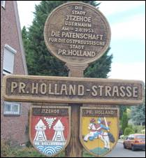
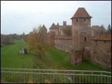
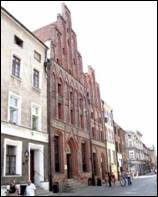
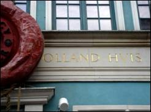
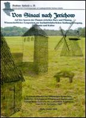
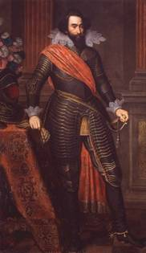
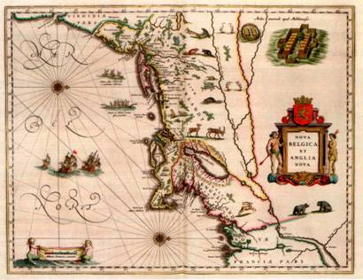
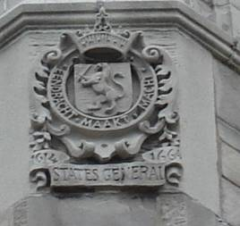
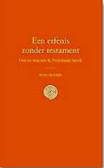

> nieuwsbrief
> 1e trimester
2011
| Bijdragen over: | Tip |
Hernieuwen bijdragen 2011
Eens te meer nadert de jaarwisseling met
rassé
schreden. Voor de penningmeester brengt dit mee om ervoor te zorgen dat
de
hernieuwing van de bijdragen andermaal vlot verloopt. In ruil voor een
ongewijzigde basisbijdrage van 25 € verzekert u zich ook in
2011 van een
abonnement op onze Zannekin
Nieuwsbrief
en van het – reeds 33e – Jaarboek De
Nederlanden ‘extra muros’. Als steeds hopen
we er
andermaal op dat eenzelfde aantal leden spontaan deze basisbijdrage afronden
tot het ronde bedrag van 30 €. Zij immers maken het ons mogelijk om
extra-initiatieven te ontwikkelen, als b.v. de publicatie van brochures
naast
de Nieuwsbrief en het Jaarboek. Ook
de adressen buiten België
vinden hierbij voor het eerst een internationaal
overschrijvingsformulier.
Alsdusdanig is dit wellicht niet bruikbaar ter betaling; wel vindt men
er de
korrekte IBAN- en BIC-codes op terug die een feilloze en kosteloze
overboeking
naar de Belgische Zannekin-rekening
mogelijk maken. Betalingen met gebruikmaking van deze IBAN- en
BIC-gegevens
(kostenvrije Europese overschrijvingen) bereiken ons het vlotst en wel
dagelijks. Voor ons Nederlands girionummer zijn voortaan ook de IBAN-
en
BIC-codes van toepassing (cf. onderaan p. 1). Gezien de evolutie inzake
internationaal betaalverkeer werd onze Duitse Postcheckkonto opgezegd.
We raden
dringend aan om bij voorkeur van onze Belgische rekening (waarvan
gegevens op
bijlage) gebruik te maken. Ze biedt ons dagelijks de actuele stand van
zaken.
29e
jaargang!
De jaargang 2010 van onze Nieuwsbrief
Zannekin droeg het jaar-gangnummer 27. dit eerste
nummer van de jaatgang 2011 draagt het jaar-gangnummer 29. Slaan we dan
zomaar
een jaargang over? Hellemaal niet: we zetten alleen maar een al
jarenlange
foutieve nummering recht! We hebben het met name gepresteerd om twee
jaargangen
met het nummer 22 uit te geven en wel in 2004 en 2005. Sindsdien loopt
het mis
en dit willen we met ingang van 2011 rechtzetten. Die foute nummering
geldt
overigens slechts voor de gedrukte versie van de Nieuwsbrief.
De electronische versie is steeds aan dit euvel
ontsnapt!
Davidsfondskalender
Frans-Vlaanderen 2011
Een jaar in de
Franse Nederlanden
– Un an dans les
Pays-Bas Français. Onder
dit motto verscheen recent de
tweetalige nieuwe Frans-Vlaamse kalender. Op één na zijn alles foto’s
andermaal
van de hand van Cyriel Moeyaert. Hij wisselde stads- en natuurzichten
af met
foto’s van kunst-werken. Deze worden telkens uitgebreid toegelicht en
becommentarieerd op de achterzijde.
Mits overboeking van 8 € (verzendkosten
inbegrepen) op rekening 000-1529169-61 t.n.v. DF-Frans-Vlaanderen,
krijgt u de
kalender thuisbezorgd. Méér info:
Durbuy,
de kleinste stad ter wereld
Van 11 september tot en met 3 oktober 2010
werden onder de titel “Exposition BD (Bandes Desinnées) et Dédicasses”
acht
grote (
Terugblik
op Bentheim
Onze Ontmoetingsdag van 23 oktober jl. kon
niet
bogen op een zeer talrijke opkomst; wel op een boeiende invulling van
het
programma. Dit werd dan ook door de aanwezigen gesmaakt en naar waarde
geschat.
Gezien de te overbruggen verre afstand
(vanuit
Vlaanderen gezien dan toch) hadden we er wellicht beter aan gedaan om
er van
meet af aan een twee-daagse van te maken (waarvoor nogal wat deelnemers
trouwens
op eigen initiatief geopteerd hadden). Bad Bentheim is overigens niet
opéén dag
“te doen”, wanneer daarbij ook nog lezingen de ganse voormiddag in
beslag
nemen. In de namiddag bleef ruimschoots de tijd voor een bezoek aan de
burcht;
het Steenmuseum viel door tijdsgebrek spijtig genoeg tussen de plooien.
Wie al op
vrijdagavond present was kreeg er nog een extraatje bovenop: een
nachtelijke
rondgang met de “nachtwacht” die ons op een ludieke wijze kennis liet
maken met
het verleden (en de mythes) van Bentheim doorheen de eeuwen. Niet
voorzien in
het programma, maar des te meer gesmaakt!
Zannekin-Studieuitstap zaterdag
30 april 2011
Daguitstap naar Frans-Vlaanderen vanuit Nieuwpoort
Thema:
Over en rond de heilige
Vlaamse berg,
veldslagen en bosgeuzen.
Programma:
08.00 uur: samenkomst op
het Marktplein te Nieuwpoort
08.15 uur: vertrek busrit
via De Moeren en Houtem naar Hondschoote.
08.45 uur: Hondschoote:
koffie met gebakjes in Ons Kot te Hondschoote en bezoek aan
het stadje,
met Sint-Vedastuskerk, het stadhuis, windmolens, de saainijveheid
(scotta),
kloosterveld met kapel, hagenpreken met Sebastiaan Matte en Jocob de
Buzere,
bosgeuzen o.l.v.
10.45 uur: busrit via Herzeele en Wormhout
naar Cassel.
11.15 uur: Cassel, ontvangst door het
stadsbestuur op
de Mairie, korte lezing over Cassel door de eeuwen heen, het Reuzelied
en over
de Casselse predikant Petrus Dathenus.
12.15 uur: Vlaams middagmaal verdeeld over
het Kerelshof en 't Kasteelhof, de
hoogst gelegen taverne-spijshuis van
Frans-Vlaanderen.
14.15 uur: Groep A: Musée
de Flandre in ’t
Landhuys - Groep B: Monument op de Casselberg, windmolen, prachtige
vergezichten, OLV-kerk, radio Uylenspieghel.
15.15 uur: Groep A: Monument op de
Casselberg,
windmolen, prachtige vergezichten, OLV-kerk, radio Uylenspieghel -
Groep B: Musée de Flandre in ’t Landhuys.
16.15 uur: busrit van Cassel via de
historische
slagvelden naar Noordpeene.
17.00 uur: Noordpeene,
bezoek aan het museum van de Slag
aan de Peene (1677), uitleg over Niklaas Zannekin en zijn
boerenleger, het graf van Tisje-Tasje, hulde aan kanunnik Camille
Looten;
vijfuurtje met zoet en/of zout en een drankje in de Herberge van de
Peene
- Plaetse – Noordpeene
19.30 - Terugrit naar Nieuwpoort;
aankomst aldaar om 20.30 uur.
De
deelnameprijs zal 65,00
€uro (alles is inclusief) bedragen.
Aanmelden:
bij de volgende Zannekin-Nieuwsbrief
(verschijnt aanvang april) vindt u een
aanmeldingsformulier. Er dient eerst dan (bij middel van die
aanmelding) ingetekend
te worden.
Aldus kaderen wij onze Zannekin
Studie-uitstap
binnen het gebeuren van de Nieuwpoortse Frans-Vlaamse veertiendaagse.
____________
Zannekin
Ontmoetingsdag 2011: deze zal op 19 november
doorgaan te Burtscheid nabij Aken en in het teken staan van de
Sint-Nicolaas van Myravieringen. Meer terzake in de volgende Nieuwsbrief.
Op zoek naar Vlaams-Nederlandse sporen in Noord-Polen

Zie ook de info terzake in
onze vorige Nieuwsbrief.
Voor deze meerdaagse reis staan al
een tiental
gegadigden op de wachtlijst. Inschrijven is dus
niet meer mogelijk. We
plannen
een begeleidende brochure bij deze reis. Hieronder alvast de inleiding
daarvan:
1.
Inleiding
Al voordat de ridders van de
Duitse Orde in 1226 zich in Pruisen vestigden, nu het gebied in het
noordoosten
van Polen en de Russische enclave met Koningsbergen, was er al sprake
van een
kolonisatie vanuit het Noord-Duitse laagland naar het oosten.
De
oorspronkelijke bevolking bestond grotendeels uit Pruzzies, een
vermoedelijk in
de 17e-18e eeuw uitgestorven Baltische etnische groep, verwant met de
Letten en
Litouwers, en in mindere mate uit Sla-vische groepen, onder wie de
Mazuriërs en
de Kasjoeben.
Marienburg,
Teutoonse
Riddersburcht (LC)
Aangezien de toenmalige
streken ten oosten van de Elbe tot aan de Oostzee werden bewoond door
veelal
heidense stammen ging de kolonisatie niet zelden gepaard met geweld en
verdrijving van de oorspronkelijke bevolking. Bovendien was het land
niet zo
sterk ontwikkeld als het westelijke deel van Europa, waardoor de
vergelijking
met de kolonisatie van Noord-Amerika vanaf de 17e eeuw niet misplaatst
is. Het
Baltische gebied vormde in zekere zin het ‘wilde oosten’ van het
middeleeuwse
Europa.
Bij deze reis willen we ons
specifiek richten op de verste uitwaaiering van kolonisten uit de Lage
Landen,
die zich richting het oosten vestigden, namelijk in de Weichsel- of
Wijsel-delta ten zuiden en ten oosten van de stad Dantzig. Hier hebben
zich
eeuwenlang kolonisten uit zowel de Noordelijke als de Zuidelijke
Nederlanden
gevestigd en hun sporen nagelaten in het landschap en in de cultuur.
Sinds de verschuiving van de
grenzen in dit gebied vanaf 1945 zijn de namen van de meeste plaatsen
en
rivieren ‘geslaviseerd’. Bepaalde locaties hadden echter al eeuwen lang
een
Slavische of Baltische naam. Om verwarring te voorkomen en voeling te
houden
met ons reisdoel worden de Nederlandstalige namen aangehouden met
daarachter
een verwijzing naar de Duitse en Poolse naam. Wellicht ten overvloede
willen
wij benadrukken dat deze reis bedoeld is om kennis over de betekenis
van de
Nederlandse geschiedenis in dit gebied op te doen en niet om enige
staatkundige
aanspraken van wie dan ook te ondersteunen of te ontkrachten. Dit
boekje is
opgesteld met het doel om de reisplanning uit te leggen en
achtergrondinformatie te bieden bij de plaatsen die we gaan bezoeken.
 
Links: Thorn -
Geboortehuis
Copernicus – Rechts: Dantzig - Holland Huis (foto’s
In het voetspoor van de Vlamingen tussen Harz en Fläming
In 2009 werd in de Landkreis
Anhalt-Bitterfield – in samenwerking met de Vereniging Fläming-Flandern
en met
partners in Vlaanderen/België – herdacht dat 850 jaar geleden Vlaamse
uitwijkelingen naar deze regio ertoe bijgedragen hebben de gebieden van
de
Fläming zijn naam te geven.
In zijn huidige geografische
omschrijving hebben we het dan over de Landkreise Teltow-Fläming,
Potsdam-Mittelmark, Jerichower Land, Anhalt-Bitterfeld en Wittenberg.
Samen
vormen ze de topografische eenheden van de “Hoher und Niedere Fläming”.
Ook wanneer
het zwaartepunt van de 12e-eeuwe
kolonisatie in de Altmark, rondom Maagdenburg en Halle lagen, getuigen
Hollandse molens en uit veldstenen opge-trokken kerken van de drukke
vestiging
van Vlaamse, Hollandse en Nederfran-kische inwijkelingen in het oosten
en
zuidoosten van Sachsen-Anhalt.
In de loop van november 2009
werd in de Lutherstad Wittenberg een symposium gewijd waarbij
systematisch
gespeurd werd naar oorzaak en gevolgen van deze laatmid-deleeuwse
kolonisatiebeweging. Initiatiefne-mer van dit gebeuren was het
Bildungsverein
Studium Hallense e.V,
Van dit symposium, dat onder
de titel “Auf den Spuren der Flamen zwischen Harz unde Fläming” van
start ging,
verschenen zopas de “Protokollband”, zijnde de bundeling van de op het
symposium aan bod gekomen onderwerpen. De bundel kreeg de titel Von Sinaai nach Jerichow, zijnde van
Sinaai in het Waasland naar de vlek Jerichow in de Fläming (een traject
dat
tijdens de voorbije maanden met kar en paard overgedaan werd langs
dezelfde
wegen waarlangs destijds onze cultuur, gewoonten en tradities bredere
horizonten zochten: “Naar Oostland willen wij varen…”)
De bundel beslaat 304
pagina’s, waaronder een bijdrage van Zannekin-voorzitter
_______________________
N.a.v. Von Sinaai
nach Jerichow. Auf den Spuren der
Flamen zwischen Harz und Fläming. Protokollband.
ISBN
978-3-00-032950-0. Uitgave Studium Hallense e.V., Postfach 11 01 07, D.
06015
Halle (Saale). Prijs (inclusief verzendkosten): 32,90 €. Rekening IBAN:
DE29
8009 3784 0001 5067 73 - BIC GENODEFIHAL.
tot 2005 onbekend als pandheer van Stevoort
Willy
Alenus, Oostende
Hendrik van den Bergh (Bremen,1573 – 22 mei 1638),
graaf van Bergen-op-Zoom, die in alle encyclopedieën ook nog wordt vermeld als heer van Stevensweert
(vandaag een deelgemeente van Maasbracht, Ned. Limburg), was een
Nederlands
edelman-militair in Spaanse dienst ten tijde van de “Opstand”
(1568–1648). Hij
was ook stadhouder, “lieu-tenant”,
van Spaans Opper- Gelre (Venlo en Stevensweert).
Maar in 2005 maakte Rombout
Nijssen bekend - hij is vandaag rijksarchivaris R.A. Hasselt - dat
graaf
Hendrik ook nog pandheer was geweest van de heerlijkheid Stevoort,
toentertijd
in het graafschap Loon, prinsbisdom Luik, - en wel tot 1638, dus tot
tien jaar
vóór het einde van de Dertigjarige Oorlog (1618-1648).1
Vandaag is
Stevoort een deelgemeente van Hasselt.
Hendrik was de zevende zoon
van graaf Willem IV van den Bergh en Maria van Nassau, de oudste zuster
van
prins Willem van Oranje. Net als al zijn broers maakte hij carrière in
het
Spaanse leger. Maar na het Twaalfjarig Bestand (1609–1621), ontevreden
zijnde
met de Spaanse overheersing in en van Zuid-Nederland, zeker na de val
van
Oostende (1604), begon hij te “onderhandelen” met de Orangisten2
en
kwam hij, in 1632, door omkoping, aan de zijde te staan van de Opstand,
in de
persoon van zijn oom, de stadhouder prins
De
eerste pandheer van Stevoort was Mattheus van den Roye, schepen van het
Hooggericht van Vliermaal (van 1619 tot
?), de tweede was Hendrik van den Bergh (1573-1638), van ?
tot 1638, de derde was Johannes III Alenus,
Jr. (1593–1644), schepen van de plaatselijke schepenbank (van 1638 tot
1639) en
de vierde was een pandvrouwe, Maria, Elisabeth (1613 – 1671), prinses
von
Hohenzollern (van 1639 tot 1671).3
Deze
oudste dochter en erfgename wordt vermeld als markiezin
van Bergen-op-Zoom, terwijl haar vader en erflater als graaf
van dezelfde stad wordt vernoemd.
Huwelijken en kinderen
In 1638 kwam dus alle eigendom
en vruchtgebruik van alle hebben en houwen van graaf Hendrik in
aanmerking om
via erflating en alle andere rechtsmiddelen van eigenaar te veranderen.
 Hendrik
van den Bergh
Bij leven en welzijn had
Hendrik drie vrouwen gehad en in totaal zeven kinderen nagelaten in een
tijd
dat kindersterfte schering en inslag was. In 1612 was hij getrouwd met
Margaretha van Wittem van Beersel (1582-1627), dochter van Jan van
Wittem en
Maria Margaretha van Merode. Uit dit huwelijk werden twee kinderen
geboren, - Maria
Elisabeth II van den Bergh (1613-1671), markiezin van Bergen-op-Zoom, -
zij zou
huwen met Eitel
Op het eerste gezicht ligt het nogal voor
de hand
dat Maria Elisabeth II van den Bergh, door haar huwelijk gravin van
Hohenzollern-Hechingen geworden, ook de pandheerlijkheid Stevoort zou
erven en
dat zij de derde pandvrouwe zou worden, in opvolging van haar vader, de
tweede
pandheer. Het eerste is waar, het tweede niet.
In 1638 gebeurde er iets eigenaardigs, toch
voor de
één en twintigste eeuwers die wij zijn. Het ontsnapte aan de aandacht
van alle
encyclopedieën, maar niet aan die van de rijksarchivaris in Hasselt. De
eerste pand-heer
van Stevoort was dus Mattheus van den Roye en de tweede
Hendrik van den Bergh. Maar de derde was Johannes III Alenus en de
vierde was
dus een pandvrouwe, Maria, Elisabeth, prinses von Hohenzollern.
Met de huidige
stand van het onderzoek, hebben wij en allen die zich
voor dit vraagstuk hebben ingezet, de indruk dat er twee mogelijkheden
zijn, -
ofwel werd Johannes III in 1639 opzij geschoven onder druk en ten
gunste van de
machtige prinses von Hohenzollern (maar doet de prins-bisschop dat met
een
“courtier” die hij aanschrijft met “notre cher et aymé Jean Alenus
?”),- ofwel
heeft Johannes, in 1638, hij die het dichtst bij de vacante seigneurie
stond en die vele leden van
de hoge, katholieke Rooms-Duitse adel had leren kennen toen hij nog
raadsheer
van de Palts-keurvorst was (1623–1638), de heerlijkheid “warm” gehouden
voor de
prinses von Hohen-zollern, die zich misschien in die roerige tijden van
de
dertigjarige oorlog in de onmogelijkheid bevond haar erfenis op te
eisen. Het
overlijden van Johannes, op 20 augustus
Noten
1
Rombout
NIJSSEN, De pandheren van
Stevoort in de 17de eeuw (1619- 1671), in J. MAENEN, R. DREESSEN
& B.
INDEKEU (eds.), Tesi samunaga was edele
unde scone, Liber Amicorum Theo Coun, Limburg-Het Oude Land van Loon,
Hasselt, 2005, pp. 137 – 151.
2
Toen
“Staatsen” genoemd omdat
Noord-Nederland, de Zeven Provinciën, de Staten- Generaal als
Staatshoofd
hadden, omdat de 17 maal vorst van alle Zeventien Provinciën, Filips
II, zich
in de 7 noordelijke provinciën “in de onmogelijkheid van te regeren”
bevond.
3 Willy ALENUS, Johannes III
Alenus, Raadsheer (1623–1628)
van de Palts- Keurvorst van Maximiliaan I, heer van Stevoort (1638) en
gelimogeerd als scepene ende secretaris van Herk-de-Stad (1644),
in: De Nederlanden ‘Extra Muros’, Zan-nekin,
Ieper/ Numansdorp, deel 32, 2010, pp. 71 – 86.
4 Hohenzollern,
Duits
vorstengeslacht, afkomstig uit het land Hohenzollern, waarvan de geschiedenis teruggaat tot de elfde eeuw.
Sedert het begin van de dertiende eeuw is het geslacht gesplitst in een
Frankische en een Zwabische tak. Van deze laatste tak, die het stamland
Hohenzollern-Hechingen
had behouden, werd Karel de Eerste (†
1576) ook nog graaf van Sigmaringen. Bij zijn dood splitste de tak zich
in drie
families,waarvan de laatste Hohenzollern-Sigmaringen voortleeft tot
vandaag
(cfr. Maria von Hohenzollern-Sigmaringen, de moeder van koning Albert
de Eerste
der Belgen). In 1692 werden de Zwabische Hohenzollern, die katholiek waren gebleven, in de
rijksvorstenstand opgenomen. Deze voetnoot is niet onbelangrijk
voor de geschiedenis van de pandheerlijkheid Stevoort en voor de
lotgevallen
van Johannes (Jan) Alenus.
5 Hendrik zou in 1629
hertrouwen met Hiëronyma Catharina gravin van Spaur-Flavon (1600-1683).
Uit dit
huwelijk zouden drie dochters worden geboren. En bij “een andere
vrouw”, dat
zeggen de kronieken, verwekte hij nog een dochter en nog een zoon. Al
deze broers
en halfbroers, zusters en halfzusters zouden huwen met leden van de
hoogste
adel in het toenmalige Rooms-Duitse keizerrijk.
Peu de monde sait que les
premiers fondateurs de la ville de
New York furent des réformés wallons, exilés aux Pays-Bas au 17ème
siècle.
Recrutés par Jessé de Forest, ils débarquèrent en 1624 dans ce qui
allait
devenir la première ville commerciale et financière du monde. Puissent
les
générations présentes et futures de Wallons s‘en souvenir et s‘en
inspirer afin
de redonner à
Préambule
historique
Dans la seconde moitié du l6ème siècle,
Plilippe II, roi d’Espagne et des Pays-Bas, a pour
programme de régner en souverain absolu sur nos provinces et den
extirper
radicalement le Protestantisme. Pour réaliser ce double objectif, il y
depêche
comme gouverneur le duc d’Albe, lequel ne réussit qu’à soulever contre
lui
toutes les classes de la population.
La révolution marque la fin de l’unité du pays. En 1579,
sous la conduite de Giuillaume d’Orange, le Taciturne, les provinces de
nord
(les Pays-Bas actuels) se libérent du joug espagnol et, sous le nom de
Dans les provinces belges, toujours dépendantes de
l’Espagne, la répression est impitoyable. Contraints à l’exil, des
dizaines de
milliers de protestants du Hainaut trouvent un refuge sûr dans les pays
qui ont
adhéré à

Jessé
de Forrest: Avesnes – New York
La famille de Jessé de Forest est attestée à Avesnes depuis la fin du 15ème
siècle. Gille de Forest est receveur de
On ignore la date précise de naissance de Jessé, sans
doute vers 1575 à
Avesnes-sur-Helpe. Son père Jean s’est marié vers 1570. En 1587, Jean
possède
la ferme de la dîme de l’Abbaye de Liessies et fait baptiser à Avesnes
sa file
Anne. Il reste done encore conformiste sur le plan religieux a cette
date et il
est probable que le protestantisme de Jessé vient plus de sa conversion
personelle que de l’exemple paternel. Jean continue d’habiter la région
après
l’exil de Jessé. En 1600, il habite encore Avesnes; en 1609, il est à
Jessé part
ensuite en Hollande, à Leyde, où existe une importante colonie
francophone (composée de Français ou de Wailons). Ses enfants Isaac et
Israël
(prénoms bibliques caratéristiques des Huguenots), mais aussi Philippe
(prénom
familial) y naissent. En dépit de la sécurité dont ils bénéficient,
certains
exilés wallons s’adapient difficilement au milieu hollandais. Jessé de
Forest
rassemble et organise un groupe de compatriotes exerçant divers métiers
désireux de fonder une colonie aux Amériques. Pour trouver un
financement, il
s’adresse d’abord au gouvemement britannique. La pétition signée par
Jessé et
56 pères de familie, le l9 juillet 1621, présente la forme d’un Round
Robin,
c’est-â-dire que les signatures forment cercle autour du texte, cette
de Jessé
étant au centre. Jessé veut à l’époque créer une colonie
autonome
s’adminstrant seule. Reconnaissant juste la souveraineté du
Roi
d’Angleterre. Il s’agit donc bien
à l’époque de reconsti-tuer
Outre-At-lantilque une sorte de ville
d’Avesnes idéale parce que protestante.
Le gouvernement anglais refuse la propositton, offrant
simplememt de répartir les colons recrutés par Jessé dans divers
établissements
déjà existants. Jessé présente alors la même requête aux Etats
Provinciaux de
Hollande et de Frise, sous les auspices de
Le rôle joué per Jessé de Forest n’est donc pas d’avoir
fondé New York, mais bien d’avoir recruté ses premiers habitants parmi
des
exilés francophones venant de France ou des Pays-Bas espagnols. Il est
donc
permi d’affirmer que les fondateurs de New York furent des Walions et
des gens
du Hainaut, recrutés par Jessé de Forest, et que c’est ce dernier qui
avait
conçu et préparé l’émigration deux ans plus tard sous l’étendard de
Certains enfants de Jessé s’établirent à New York. Isaac
et Henri de qui descendent les de Forest américains et Rachel qui
épousa Jean
Mounier de
En revanche, le frère de Jessé, Gérard et sa soeur,
restèrent en Hollande, à Leyde et Amsterdam.
Quant aux de Forest demeurés à Avesnes, ils y
prospérèrent jusqu’au XIXéme siécle
une des branches s’éteindra avec Eugène Alexandre de Forest de Lewarde,
premier
président à
JESSE DE FOREST
SA FAMILLE
ET
SES VAILLANTS
COMPAGNONS
DU PAYS WALLON
QUI CHERCHANT UN
NOUVEAU MONDE
OU ILS POURRAIENT
EN PAIX
AFFIRMER LEURS
CROYANCES ET
PRATIQUER
LIBREMENT
ONT CONTRIBUE
PUISSAMMENT
A
NEW YORK
OU LES ENFANTS DE
JESSE DE FOREST,
ISAAC, HENRI ET RACHEL
S’ETABLIRENT EN
1637.
Inscripiion figurant sur le monument
se trouvant à
d’Avesnes. près
de la route de
Sains-du-Nord
Hoe en waarom ik Nederlands leerde

Hoe en waarom ik
Nederlands leerde is de veelgestelde vraag die me mijn hele leven als
Frans-Vlaming achtervolgt. En ook: Of wij thuis Vlaams spraken, en of
hoegenaamd nog iemand Vlaams of Nederlands spreekt in
Frans-Vlaan-deren?
Ik schreef mijn
nieuwe boekje Een erfenis zonder
testament om te trachten een antwoord te geven op deze, en nog
andere
vragen. Het telt 31 blz. met 13 illustraties en is gezet in de Garamont
corps
11 en gedrukt op Munken Print Cream papier, gebroken wit 100 gr.
Dit hebbeding
verschijnt in beperkte oplage en komt niet in de boekhandel. Het is
uitsluitend
bij de auteur te verkrijgen door middel van onderstaande bestelbon. Het
verschijnt op 15 december. Nu reserveren is de boodschap! De opbrengst
van dit
boekje wordt integraal gebruikt voor het steunen van culturele
initiatieven in
en rond Frans-Vlaanderen.
Het boekje werd
zopas bekroond met de Dr. Ferdinand
Snellaertprijs 2010, uitgereikt door de Vereniging van
Vlaams-nationale
Auteurs
Hoe
bestellen?
De kostprijs
bedraagt 12 €, verzendkosten inbegrepen, te storten op rekeningnummer
IBAN: 66
0011 1648 4043 – BIC: GEBABEBB t.n.v.
Redactionele
waardering
Deze tekst kan
in zekere zin beschouwd worden als een summiere 21-eeuwse tegenhanger
van
Jean-Marie Gantois’ Hoe ik mijn volk en
mijn taal terugvond, dat in 1942 door de toenmalige Zannekin
– Arbeidsgemeenschap voor Zuid-Vlaanderen en de Vlaamse
Toeristenbond uitgegeven werd.
Er zijn
uiteraard ook verschillen: Gantois (1904-1968) groeide op in het zo
goed als
volledig verfranste Waten, Bourel zag in 1955 het levenslicht in
Haezebroek en
groeide op in Kaaster/Caëstre vlak over de Schreve, waar het
Frans-Vlaams enigermate
overleefde. Daar over en over zijn inzet in en voor de Franse
Nederlanden méér
op zijn webpagina’s http://www.widopedia.eu
Is het fout te stellen dat dit
waarschijnlijk de
laatste generaties zijn of waren, die het van huize uit meegekregen
hadden en
het niet per se ingestudeerd hadden?
Edouard Michielsstraat 51, B – 1180 UKKEL / Brussel
e-post: leo.camerlynck@skynet.be
- t. 00 32 485 63 02 27